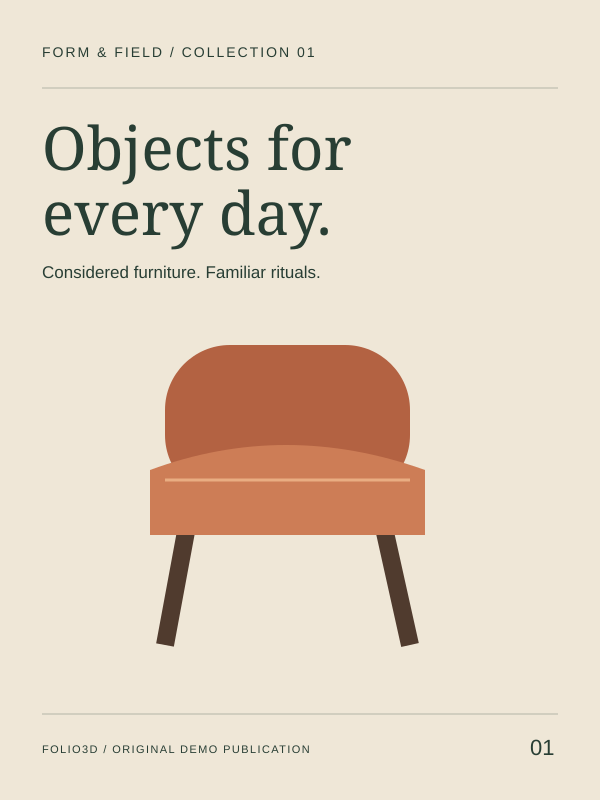
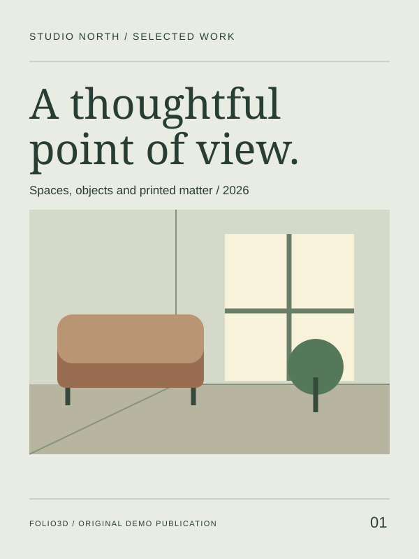
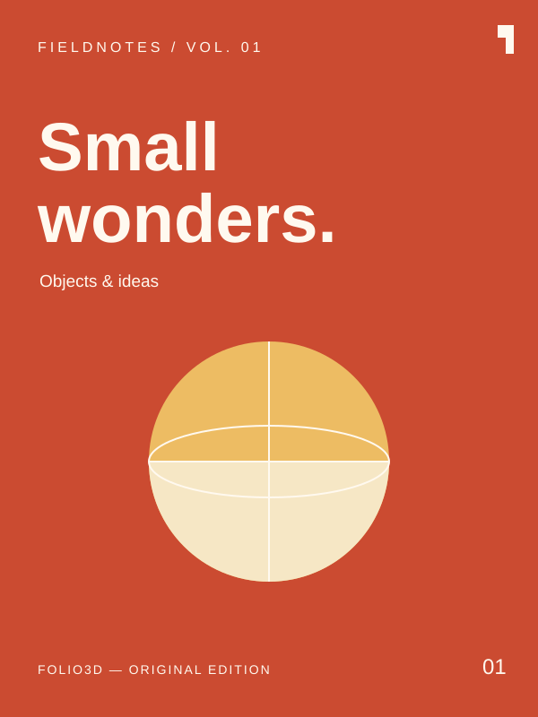

Catalog
Form & Field
Browse a collection of everyday objects with shortcuts to each section.
Explore the catalog ↗Open-source flipbook reader
Turn PDFs and images into interactive flipbooks. Read them in your browser or embed them on your site.
Try the readerChoose a sample or open a PDF from your device. Local files stay in your browser.
Drag to turn. Browse pages and contents, or bookmark a place to return to.
Opening the image book…Explore three ways to publish with Folio3D, from a product catalog to a digital reading room.

Catalog
Browse a collection of everyday objects with shortcuts to each section.
Explore the catalog ↗
Portfolio
A single-page portfolio of spaces, objects and printed matter.
Explore the portfolio ↗
Bookshelf
Choose a publication or bring your own PDF. Settle in and read.
Visit the reading room ↗Add Folio3D to a page with a stylesheet, an ES module and your publication. The example reflects the theme selected in the playground.
import { createFlipbook } from './lib/folio3d.js';
const book = createFlipbook(element, {
source: { type: 'pdf', data: './catalog.pdf' },
theme: 'atelier',
});
await book.ready;
book.goToPage(4);
// When the view unmounts
book.destroy();Load the stylesheet and keep the distribution’s assets together. CDN & publishing guide ↗
#catalog .folio3d {
--folio-accent: #005a7a;
--folio-font: Georgia, serif;
}Place your inline reader inside #catalog. Use themeOverrides to carry custom colors into a lightbox too.